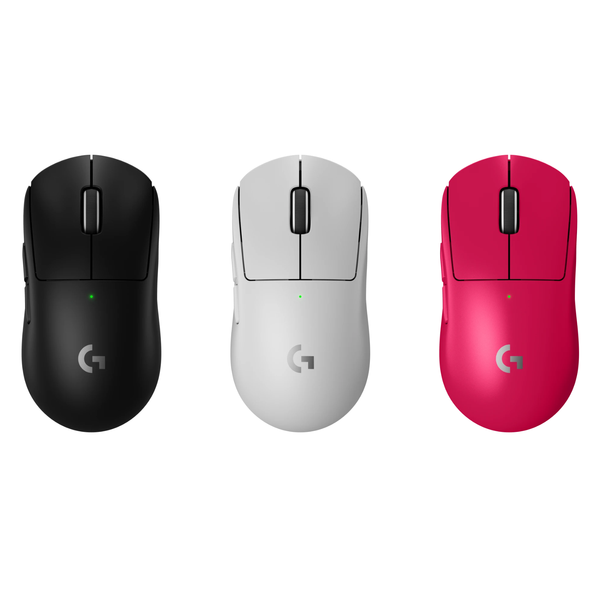
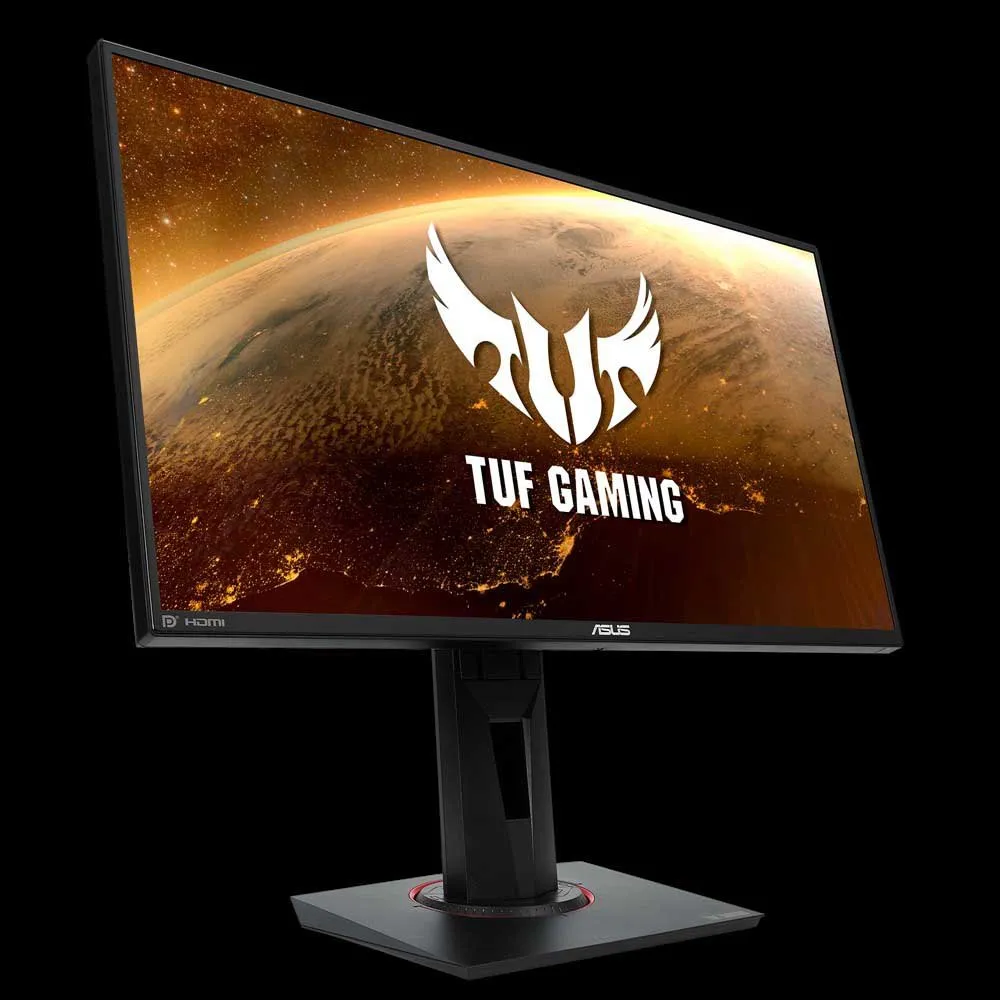
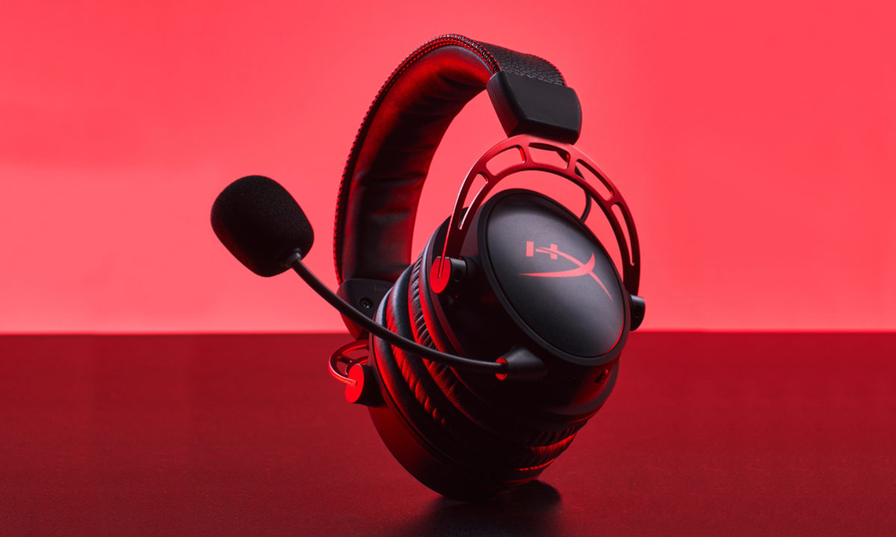
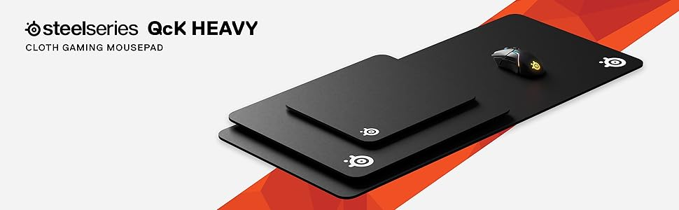

Tecnología | Top 5 accesorios que necesitas
Publicado por CodeMasters — 2025

🥇 Top 1 — Mouse Logitech G Pro X Superlight
Este mouse es uno de los más usados en gaming competitivo y eSports.
Destaca por su peso ultra ligero, precisión extrema y sensor de alto
rendimiento. Es ideal tanto para shooters como para uso profesional
prolongado.
👉 Ideal para: gaming competitivo y precisión máxima.

🥈 Top 2 — Teclado SteelSeries Apex Pro
El SteelSeries Apex Pro es considerado uno de los mejores teclados del
mercado. Sus switches ajustables permiten personalizar la sensibilidad
de cada tecla, lo que lo hace perfecto para gaming y escritura.
👉 Ideal para: jugadores exigentes y creadores de contenido.

🥉 Top 3 — Monitor ASUS TUF Gaming VG259QM (240Hz)
Este monitor ofrece una experiencia ultra fluida gracias a su tasa de
refresco de 240Hz. Es muy popular entre jugadores competitivos y
ofrece excelente calidad de imagen y bajo tiempo de respuesta.
👉 Ideal para: FPS, eSports y juegos competitivos.

🎧 Top 4 — Audífonos HyperX Cloud Alpha
Los HyperX Cloud Alpha son conocidos por su comodidad, buena calidad
de sonido y durabilidad. Son perfectos para largas sesiones de juego y
comunicación clara en línea.
👉 Ideal para: gaming, streaming y trabajo remoto.

🖱️ Top 5 — Mousepad SteelSeries QcK Heavy
Este mousepad profesional ofrece una superficie suave y precisa,
además de una base antideslizante. Es muy usado por jugadores
profesionales y mejora notablemente el control del mouse.
👉 Ideal para: precisión y comodidad.